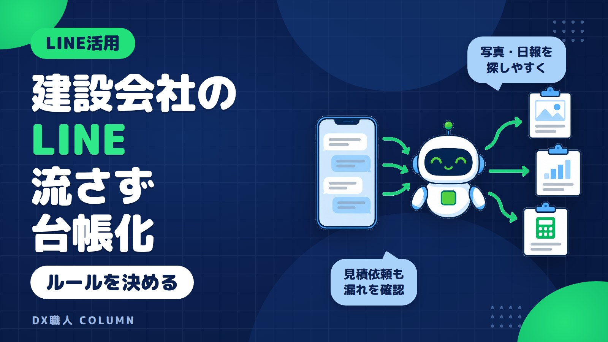

建設会社のLINE業務利用ルールと写真日報見積の台帳化方法
現場写真、日報メモ、見積依頼がLINEに集まる一方で、どこに何があるか探せない会社は多いです。この記事では、通常LINE、LINE WORKS、LINE公式アカウントの使い分けと、DX職人のAIシステムで台帳化する具体ルールを整理します。

この記事の要点
- 入口は3種類で使い分ける
- 文頭ラベルで用件を分ける
- 写真・日報・見積を台帳化
- AIが不足項目を聞き返す
- 費用は助成金も確認する
建設会社のLINE業務利用は入口を決めれば始めやすい
建設会社でLINEを業務に使うこと自体は珍しくありません。現場写真、到着連絡、材料の確認などは、電話より早い場面があります。
ただし、何でも個人トークに送る形では危険です。あとで探せず、事務所に情報が残りません。最初に「誰が、どこへ送るか」を決めます。
主な入口は3つです。通常のLINE、LINE WORKS、LINE公式アカウントです。名前は似ていますが、向いている使い方が違います。
| 入口 | 向いている場面 | 注意点 |
|---|---|---|
| 通常のLINE | 職人、協力会社、現場との早い連絡 | 個人トークに残りやすい |
| LINE WORKS | 会社で管理したい業務チャット | 使う入口をそろえる必要がある |
| LINE公式アカウント | 施主や外部からの問い合わせ受付 | 現場内の細かい整理は別に必要 |
小さく始めるなら、現場がすでに使っているLINEを入口にする方法があります。その場合も、送った内容を写真台帳、日報台帳、見積依頼台帳へ移す仕組みが必要です。
正解は会社ごとに違います。大事なのは、現場が送りやすく、事務所があとで見つけやすい形にすることです。
LINE連絡をトークに流さないための共通ルール
LINEが悪いのではありません。困る原因は、送る型と確認する場所が決まっていないことです。
写真だけが届くと、どの現場の何の写真か分かりません。見積依頼が社長の個人トークに届くと、事務所は内容を探せません。日報メモが複数のグループに分かれると、夜にまとめる手間が増えます。
まず決めるのは、次の5つです。
- 文頭に【写真】【日報】【見積】を付ける
- 現場名を入れる
- 日付を入れる
- 場所や工程を入れる
- 確認してほしい内容を書く
この5つがあるだけで、AIシステムが内容を分けやすくなります。台帳とは、あとで検索できる一覧のことです。Excelのような表でも、専用画面でも構いません。
施主名、住所、室内写真、見積金額は会社にとって大事な情報です。入力してよい情報の考え方は、AIに入力してよい情報、避けたほうがよい情報でも整理しています。
現場写真は送信テンプレで写真台帳にする
現場写真はLINEと相性がよい情報です。撮ってすぐ送れるため、施工前、施工中、施工後の確認に使いやすいからです。
ただし、写真だけでは台帳に残しにくくなります。文章は短くて構いません。現場名、日付、工程だけは必ず添えます。
送信テンプレ
【写真】佐藤ビル 2026/11/16 3階天井下地
現場名：佐藤ビル
日付：2026/11/16
工程：天井下地 施工後
場所：3階東側
確認：ビスピッチを見てください
写真：3枚
この形なら、事務所は写真の意味をすぐ判断できます。DX職人のAIシステムをつなぐと、現場名、日付、工程、場所、送信者、確認状況を写真台帳の候補にできます。
足りない項目がある場合は、AIがLINEで聞き返します。
写真を受け取りました。現場名が未入力です。どの現場の写真ですか。
工程が未入力です。施工前、施工中、施工後のどれですか。
長文を書かせる必要はありません。写真を送るついでに、必要な言葉を添えるだけです。
日報は短いLINEメモから下書きと一覧に分ける
日報は、夜にまとめて書くほど思い出すのが大変です。移動中や休憩中に、短いメモをLINEへ残すほうが現実的です。
日報も型を決めます。きれいな文章にする必要はありません。箇条書きで十分です。
送信テンプレ
【日報】山田邸 2026/11/16
人数：2名
作業：外構フェンス基礎、型枠確認
材料：モルタル追加
明日：支柱建て込み予定
気になる点：ブロック天端を再確認
写真：施工後2枚
AIシステムは、このメモから日報の下書きを作れます。人数、作業内容、材料、翌日の予定、気になる点を分け、同じ現場の写真も紐づけます。
AIの返答は短くします。
日報下書きを作りました。人数と明日の予定は入っています。材料の数量だけ確認してください。
最後に確認するのは人です。AIは文章を整え、抜けている項目を知らせます。詳しい流れは、LINE日報AIで現場メモから建設日報の下書きを作る手順でも解説しています。
見積依頼は不足項目をAIに聞き返させる
見積依頼は、LINEで散らばると事務所の負担が大きくなります。内容が短いと、数量、仕様、希望日を何度も聞き直すことになります。
最初の送信型は、次のようにします。
送信テンプレ
【見積】山田邸 外構追加
内容：フェンス2m追加、既存ブロック上
数量：概算2m
希望：今週中に概算がほしい
未定：色、高さ、メーカー
写真：現場写真3枚
AIシステムをつなぐと、見積依頼として台帳に登録候補を作れます。同時に、不足している項目をLINEで返せます。
見積依頼として受け付けました。確認が必要な点は、フェンスの種類、色、高さ、既存ブロックの状態です。
この返答があると、現場も事務所も次に何を確認すればよいか分かります。金額の確定は担当者が行います。AIに任せるのは、分類、下書き、不足項目の確認までです。
見積書の下書きをLINEから作る流れは、LINE見積書AIシステムで建設業の下書きを作るかんたん手順も参考になります。
AI台帳化は送る、分ける、聞き返す、残すの順番
AI台帳化とは、LINEに届いた情報を、あとで使える一覧にすることです。AIは人工知能のことです。文章や写真の説明から、用件を分ける手助けをします。
流れはシンプルです。
- 現場がいつものLINEに送る
- AIシステムが用件を判定する
- 現場名、日付、工程などを取り出す
- 足りない項目をLINEで聞き返す
- 台帳の下書きに入れる
- 事務所が確認して確定する
台帳に入れる項目は、業務ごとに変えます。
| 用件 | 台帳に残す主な項目 |
|---|---|
| 写真 | 現場名、日付、工程、場所、確認状況 |
| 日報 | 人数、作業内容、材料、翌日の予定、写真 |
| 見積 | 依頼内容、数量、希望日、不足項目、添付写真 |
DX職人では、この流れをいつものLINEから使えるAIシステムとして作ります。現場は新しいアプリや画面を覚えなくても、トークへ送るだけです。
事務所は台帳の下書きを見て、必要な部分を直します。AIは100点の判断者ではありません。探す、分ける、下書きする作業を減らす役割です。
会社で決めるLINE業務利用ルールのひな形
LINEのルールは、長い文章にすると読まれません。現場で見られる1枚にまとめるのがおすすめです。
最低限、次の項目を決めます。
- 文頭に【写真】【日報】【見積】を付ける
- 現場名、日付、工程を入れる
- 個人トークだけで完結させない
- グループ名は工事名と用途が分かる形にする
- 施主名、住所、室内写真の扱いに注意する
- 金額の確定、顧客への回答は担当者が確認する
- 退職者や外部関係者の参加状態を定期的に見る
- 端末を紛失したときの連絡先を決める
通常のLINEを使う場合は、個人トークに情報が残りやすい点に注意します。LINE WORKSを使う場合は、会社側で管理しやすい反面、使う入口をそろえる必要があります。
LINE公式アカウントは、施主や外部からの問い合わせ受付に向いています。ただし、現場内の写真整理や日報作成には、別の台帳化ルールを合わせると扱いやすくなります。
小さな会社なら、最初から全員の使い方を変えなくても構いません。聞き直しが多い業務を1つ選び、送信テンプレから始めます。
費用と助成金はLINEの入口を決める前に確認する
最初から全業務を変える必要はありません。まずは、聞き直しが多い業務を1つ選びます。おすすめは、現場写真の整理、日報下書き、見積依頼の台帳化です。
始め方は次の順番です。
- 1週間分のLINEを見返す
- 写真、日報、見積依頼に分ける
- よく抜ける項目を確認する
- 送信テンプレを1つ作る
- AIシステムで分類と聞き返しを試す
- 事務所が直せる台帳にする
- 通常LINE、LINE WORKS、LINE公式アカウントから入口を選ぶ
費用面では、IT導入補助金などの補助金や、人材開発支援助成金などを確認できる場合があります。対象になる内容、時期、条件は年度や公募回で変わります。最新の公募要領で確認してください。
制度ごとに要件があるので、ご相談の際に確認します。採択や支給が決まっているものではありませんが、先に確認すると導入計画を立てやすくなります。
建設会社のLINE業務改善は、大きな仕組みを一気に入れる話ではありません。いつものLINEから送る型を決め、AIで台帳化し、最後は人が確認する。この順番なら、現場と事務所の負担を増やさずに始めやすくなります。
よくある質問
建設会社で通常のLINEを業務に使っても大丈夫ですか？
使えますが、個人トークだけで完結させないルールが必要です。現場名、日付、用件を付け、写真や日報や見積依頼を台帳に残す形にします。
LINE WORKSとLINE公式アカウントはどちらが建設業向きですか？
会社で管理する業務チャットならLINE WORKS、施主や外部からの問い合わせ受付ならLINE公式アカウントが向いています。通常のLINEも入口として使えます。
現場写真をLINEで送るだけで写真台帳にできますか？
写真だけでは現場名や工程が分からないため、短いテンプレを添えるのがおすすめです。AIシステムを使うと、足りない項目をLINEで聞き返せます。
LINEで届いた見積依頼をAIで管理できますか？
管理できます。依頼内容、数量、希望日、未定項目、写真を分けて台帳候補にします。金額の確定や顧客への回答は、担当者が確認する形にします。
LINEのAIシステム導入に助成金や補助金は使えますか？
使える場合があります。対象内容や時期は年度や公募回で変わります。制度ごとに要件があるので、ご相談の際に確認します。